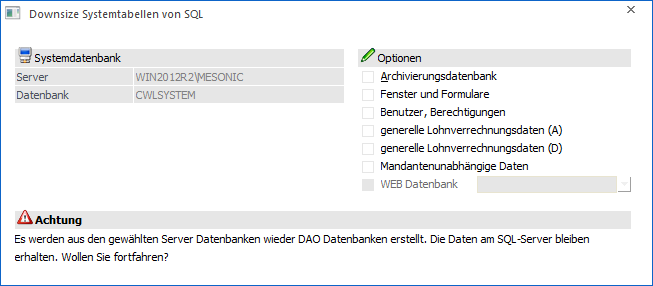
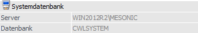
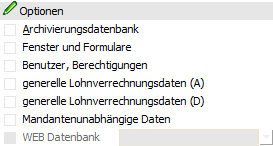

Die Systemtabellen, die sich auf dem SQL-Server befinden, können über den Menüpunkt
1 WinLine ADMIN
1 System
1 Downsize System vom SQL-Server
in Access-Datenbanken (SRV-Dateien) umgewandelt werden.
Es gibt zwei Arten von Datenbereichen, welche auf den SQL-Server verwaltet werden können:
ü Systemdaten
Dieses sind Daten,
welche für den Betrieb des Programms notwendig sind (Masken, Formulare,
benutzerspezifische Einstellungen, usw.).
ü mandantenunabhängige Daten
Das
sind Daten, die für alle Mandanten gelten. Dazu zählen u.a. Listbilder für den
WinLine Listgenerator, Vorlagen (für EXIM), Postleitzahlenstamm und
Bankleitzahlenstamm.
ü WEB Datenbank
Hier werden alle
relevanten Einstellungen, die mandantenunabhängig sind, zur WEBEdition
gespeichert.

Systemdatenbank

Ø Server / Datenbank
An dieser Stelle wird aufgeführt, wo sich die Systemdatenbank befindet. Die Felder "Server" und "Datenbank" können hierbei nicht verändert werden, da diese Informationen aus der Datei "MESOSERVERCONNECT.MESO" gelesen werden.
Optionen

In diesem Bereich kann definiert werden, welche Systemtabellen vom Server in SRV-Dateien kopiert werden sollen. Dabei besteht auch die Möglichkeit, die Tabellen selektiv auf Dateien zu kopieren.
Ø Archivierungsdatenbank
Wenn diese Option aktiv ist, wird der Inhalt der entsprechenden Tabellen in die Datei MESOARC.SRV kopiert.
Ø Fenster und Formulare
Wenn diese Option aktiv ist, wird der Inhalt der entsprechenden Tabellen in die Datei MESOPDB.SRV kopiert.
Ø Benutzer, Berechtigungen
Wenn diese Option aktiv ist, wird der Inhalt der entsprechenden Tabellen in die Datei MESOSRV.SRV kopiert.
Ø generelle Lohnverrechnungsdaten (A)
Wenn diese Option aktiv ist, wird der Inhalt der entsprechenden Tabelle in die Datei mesolohn0.SRV kopiert. Diese Option kann nur bei Einsatz des WinLine LOHN für Österreich aktiviert werden (wenn die entsprechende Lizenz vorhanden ist).
Ø generelle Lohnverrechnungsdaten (D)
Wenn diese Option aktiv ist, wird der Inhalt der entsprechenden Tabelle in die Datei mesolohD0.SRV kopiert. Diese Option kann nur bei Einsatz des WinLine LOHN für Deutschland aktiviert werden (wenn die entsprechende Lizenz vorhanden ist).
Ø Mandantenunabhängige Daten
Wenn diese Option aktiv ist, wird der Inhalt der entsprechenden Tabellen in die Datei MESOCOMP.SRV kopiert.
Ø WEB Datenbank
Wenn diese Option aktiv ist, werden die WEB-Systemtabellen in die Datei webedition.mdb kopiert.
Buttons
Ø Ok
Durch Anklicken des Buttons "Ok" bzw. der Taste F5 werden die ausgewählten Datenbereiche in die entsprechenden Dateien kopiert. Die am Microsoft SQL-Server befindlichen Daten bleiben hierbei erhalten!
Ø Ende
Durch Drücken des Buttons "Ende" bzw. der Taste ESC wird das Fenster geschlossen.